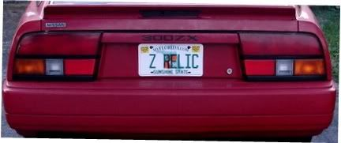

-
I say that looks about right. But the interesting thing is on Holset's website they have a mini map of the HX35 and HX40, and it shows the HX35 going up to 4 on the Pressure Ratio…this one shows it only going up to just past 3.MachZ wrote: I was looking at different turbos on Garrett's site a while back and happened to take a look at their Cummins upgrades. They actually have a compressor map comparison of the stock turbo to Garrett's setups (not sure how they got it or if they tested or what… but going by what everyone says, it seems to match up pretty well with what it should do.)
If that is correct… its definitely one awesome map for what I need.
Take a look here http://www.turbobygarrett.com/turbobyga … ummins.pdf
But the lbs/min limits are the same as on holset's website.
None of the maps are showing what we really would like to see…the efficiency islands! Thats where holset, in my opinion, is superior to any other turbo. I believe their effeciency islands on the HX series are very wide! But theres no way to prove it without the proper map.
I would like to make a page with all the Holset maps floating around the web. You'd be surprised what I found.http://www.vgpowered.com
Bridging the gap between VG communities…
Z shirts and more http://www.cafepress.com/zcargifts

-
Here's an interesting compressor map by a company that modifies the HX35. This particular map is for a HX35 with an HX40 compressor setup. They avoid using the HX40 itself as it has a smaller shaft (HX35 is actually stronger than the HX40… interesting in itself. Dodge guys are saying the same thing as well on their forums.)
Here's the info and the map is in the Technical Info tab. http://www.citydiesel.net/dodgezilla-tu … h=22_27_50
May not help much but… maybe it will. :lol: -
I dont know about that. The HX and H1C are of different design and technology all together. Smaller housing means it will flow less…and the H1C already flows less compared the the HX35, and will max out much quicker with a smaller turbine housing. Atleast thats the extent of my understanding.enjoyrth wrote: does anyone have any idea how an H1C with a 14cm turbine housing might compare to a hx35. I got my H1C for super cheap but don't plan on using it with the 21cm turbine housing it came with. Shouldn't the spool time be pretty similar to an HX35 if the turbine housing size is similar?http://www.vgpowered.com
Bridging the gap between VG communities…
Z shirts and more http://www.cafepress.com/zcargifts
-
Still in the process of shopping for a new turbo, I found this info about the Holset Hx-35/40 hybrid( I also found compressor maps for the Hx-40's if anyone's interested)…
Compressor
2.362 inducer
3.328 exducer
Turbine
2.753 inducer
2.364 exducer
Here is the specs on a straight Hx-40…
HX-40
Compressor
2.362 inducer
3.328 exducer
Turbine
2.995 inducer
2.480 exducer
Here are some specs from a Precision Sc6152 rated at 630hp…
Compressor
2.416"ind.
3.227"exd.
T350 Turbine (Stg 5)
2.920"ind.
2.420"exd.
Basically, the compressor is slightly bigger than a 60-1 but slightly smaller than the 61mm (gt35,t-61,sc61 etc.) but of course includes the Map width enhancement grooves in the compressor wheel supposedly making it about 10% more efficient than a compressor of similiar size. The Hx-35 turbine wheel is bigger than a stg 3 wheel but smaller than a stg 5, I guess a perfect stg "4" if there ever was such. The Hx-40 turbine wheel is bigger than a stg 5, and also slightly bigger than a p-trim.
Basically with all this being known, I would say the Hx-35/40 is a very attractive alternative to the 60-1, gt35 family, or anything else that uses the 61mm compressor. I would probably rate it's max potential between 620-660hp. The Hx-40 on the other hand I'm now thoroughly convinced it CAN achieve up to 700hp, but nothing more.
Basically…I've pretty much made up my mind that an Hx-35/40 hybrid is going to be my next turbo Pretty sweet considering they go for $799 brand new.
Oh yeah…I hope this actually potentially helped somebodyPrecision Pt-6176
Tubular turbo manifold
Z32TT Pump
450cc DSM injectors
MGP intake
60mm TB
44mm ext. wastegate
P&P Heads
1mm oversize Ferrea valves
Shneider cams
3"in/out FMIC
TurboXS RFL BOV
3" turbo back
Adj. cam gears
E-Fan
Iridium Plugs & Wires
Romulator
Lm-1 Wideband
Not quite together yet…but progressing -
The Hx-40 maps I found were in a thread on the dsmtuner forum. I tried saving them but for some reason they got cut in half…so I'll just post the direct link.
http://www.dsmtuners.com/forums/showthr … 083&page=5
Just look towards the bottom half of the page, there's 3 of them there. One is the 58mm 8 bladed compressor, another is the 7 bladed 60mm, and the other is the 6 bladed 60mm which is the highest flowing wheel.
Of course, another reason why Holsets are good choices for our cars is the divided turbine housings they have, which of course we have divided manifolds. A natural fit obviously, but that's one reason why they spool so fast. That's another reason why I'm starting to believe the Hx-35/40 hyrbid is one of the best turbos for our car period. It's just almost the perfect street/medium power turbo with the 12cm housing.
Based on the research I've done, (I hope I'm not sounding too fanboyish) but I think it's superior in every way to the 60-1 and the 61mm family.
Also, Hx-35's come in two different compressor trims…a 54mm wheel, and a larger 56mm. So some ARE better than others.Precision Pt-6176
Tubular turbo manifold
Z32TT Pump
450cc DSM injectors
MGP intake
60mm TB
44mm ext. wastegate
P&P Heads
1mm oversize Ferrea valves
Shneider cams
3"in/out FMIC
TurboXS RFL BOV
3" turbo back
Adj. cam gears
E-Fan
Iridium Plugs & Wires
Romulator
Lm-1 Wideband
Not quite together yet…but progressing -
If a mod could attach these pics to the forum or something so they don't disapear if/when I clean out my photobucket in the future. -
Also while on the topic, Hx-35's have two different compressor wheels…a 54mm and a 56mm. The smaller of the two probably flows slightly less than a 60-1 but the 56mm is either on par or slightly more efficient than the 60-1. The turbine wheels are all the same size, which is again roughly about a stg "4" i guess we could say. Pretty much this just reaffirms the fact that Hx-35's in either trim are cheaper and better alternatives to 60-1's.
As far as H1e's and WH1e's go…like the Hx40's that came after them, they also used the 58mm 8 bladed wheel, and the 60mm 7 bladed wheel. The H1e family also used the same turbines as the Hx-40, but also used many more sizes as well, plus they had many different turbine housing configurations. The most notable difference between the H1e family and the Hx-40's is the H1e's lack of map width enhancement, supposedly making them about 10% less efficient. The easiest way to look at an H1e is like a full T4 60-1. They all are t4 flanged with relatively large turbine housings and turbines, and run compressors very similiar to 60-1's. Your average H1e has a smaller, less efficient compressor than an Hx-40, but in most cases a larger turbine and turbine housing.
Another thing I've discovered is that it's not too hard to make a holset hybrid. Pretty much most Holsets from the H1c's and up have a 4 bolt pattern that connects from the turbine housing to the center section, meaning it's cake to swap to another (ie smaller) turbine housing. Also, after speaking with a few reputable diesel shops, most of the turbine wheels are very to swap onto other turbos. Why nobody has really explored making hybrids out of Holsets is weird, but it's not as hard as others have made it out to be. Pretty much any turbine and turbine housing from the H1c's to the H1e's and Hx35's to the Hx-40's can be interchanged. As far as the larger framed Holsets like the Hx-50's and up, I'm not sure on those yet…but everything else goes.Precision Pt-6176
Tubular turbo manifold
Z32TT Pump
450cc DSM injectors
MGP intake
60mm TB
44mm ext. wastegate
P&P Heads
1mm oversize Ferrea valves
Shneider cams
3"in/out FMIC
TurboXS RFL BOV
3" turbo back
Adj. cam gears
E-Fan
Iridium Plugs & Wires
Romulator
Lm-1 Wideband
Not quite together yet…but progressing -
More info…
Model Compressor Turbine
Holset H1D 1.85 2.165
Holset H1D 1.969 2.165
Holset H1D/E 1.969 2.165
Holset H1D/E 2.047 2.165
Holset H1D/E 2.126 2.165
Holset H1C/E 2.126 2.244
Holset H1C/E 2.283 2.244
Holset H1C/E 2.126 2.362
Holset H1E 2.205 2.362
Holset H1E 2.283 2.362
TS04 2.300 3.304
60-1 2.324 3.000
Holset H1E 2.362 2.559
Holset HX40 2.362 2.559
T-61 2.382 3.544
62-1 2.441 3.000
Holset HX50 2.48 2.835
T-64 2.490 3.670
T-66 2.580 3.584
Holset HX50 2.638 3.031
Holset HX55 2.638 3.031
T-70 2.720 3.850
Holset HX55 2.835 3.031
T-72 2.840 4.030
T-76 3.020 4.030
Turbo CFM Racing HP Daily HP
HX35 600 420 330
HX40 800 560 440
T66 800 560 440
B1 900 630 495
H2E 1000 700 550
HX50 1000 700 550
HX55 1050 735 578
HT3B 1100 770 605
T76 1350 945 743
HT60 1400 980 770
B2 1500 1050 825
HX60 1550 1085 853
T88 1450-1750 1015-1225 798-963
HT4B 1800 1260 990
Big Brother 1900 1330 1045
T91 2000 1400 1100
HC5A/HX82 2450 1715 1348
T100 2600 1820 1430
T105 2900 2030 1595Precision Pt-6176
Tubular turbo manifold
Z32TT Pump
450cc DSM injectors
MGP intake
60mm TB
44mm ext. wastegate
P&P Heads
1mm oversize Ferrea valves
Shneider cams
3"in/out FMIC
TurboXS RFL BOV
3" turbo back
Adj. cam gears
E-Fan
Iridium Plugs & Wires
Romulator
Lm-1 Wideband
Not quite together yet…but progressing -
Adding to davisranso info i found a website that sells compressor wheels to upgrade the hx35 to a 60mm wheel and hx35/40 turbo hybrids straight up.They even sell regular vband exhaust housing so u dont have to fab up your own flange.(Im not sure if im suppose to post merchant websites just tring to contribute)
http://www.htturbo.com/dodge.htm1986 Current build
HX35/40 60mm wheel,480cc injectors,nistune, spearco 2-221,6 puck,walbro fp,solid cross and diff,jason motor mounts,poly everywhere else.
 -
http://www.amstreetrod.com/991953ASR.php4 use this with a -6 to -4 reducermatthunter1448 wrote: NO something like this but -4AN to 12mm x 1.25 instead of the 1.5
http://store.summitracing.com/partde…EAR-9919BFGERL -
Not sure exactly but I think the Hy/Hx are found on pretty much all 01 and newer Dodge Cummins turbo trucks. -
cheezmonta wrote: Not sure exactly but I think the Hy/Hx are found on pretty much all 01 and newer Dodge Cummins turbo trucks.
96+ have the Hx's; 2001's and up have Hy's.Precision Pt-6176
Tubular turbo manifold
Z32TT Pump
450cc DSM injectors
MGP intake
60mm TB
44mm ext. wastegate
P&P Heads
1mm oversize Ferrea valves
Shneider cams
3"in/out FMIC
TurboXS RFL BOV
3" turbo back
Adj. cam gears
E-Fan
Iridium Plugs & Wires
Romulator
Lm-1 Wideband
Not quite together yet…but progressing -
http://cgi.ebay.com/ebaymotors/34MM-WAS … 0075576420
Came across this while looking for an acceptable actuator in a lower PSI than the stock 18psi Holset actuator. The stock valve flapper is about 31mm and you can get one of those replacements in up to 35mm. It would be a tight fit but I think it could be made to fit.
A bigger wastegate port would definatly help with the boost creep issues people seem to run into with these things when trying to run a lower pressure and keep the internal gate. -
Re:
[quote]davisranso wrote:I believe only the auto's have the HY35's, even in the newer models.Originally posted by cheezmonta -
Re: Holset Turbo Install FAQ (and Holset Info w/ Maps, p5)
well, lets see I've got a bit of info
Effezi on NismoKC a fairly local nissan site, ran an 14cm H1C on his KA24de, he hit 15 psi at 3500 rpms and did a whopping 410whp, seems to me if that little motor can spool it up, we could easily.
also another KA friend of mine painstakingly got some maps out of them, so lets see if i can upload some.
edit: Oh god they're massive....editing…
edit2: fixed.Civilize the mind but make savage the body.

Copyright © 2006–. All rights reserved. Privacy Policy